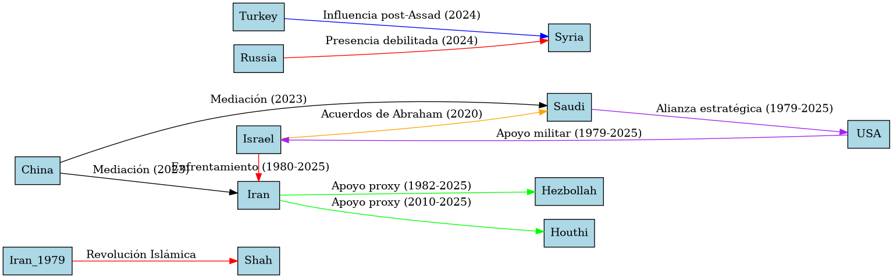

Análisis del Equilibrio Geopolítico en Oriente Medio desde la Crisis
Análisis del Equilibrio Geopolítico en Oriente Medio desde la Crisis Iraní 1979
Oriente Medio, una región estratégica en la confluencia de Asia, África y Europa, ha sido un epicentro de conflictos, alianzas y transformaciones geopolíticas durante siglos. La crisis iraní de 1979, marcada por la Revolución Islámica y la caída del Shah Mohammad Reza Pahlavi, representa un punto de inflexión que redefinió el equilibrio de poder en la región. Este análisis exhaustivo traza la evolución de las dinámicas geopolíticas desde 1979 hasta 2025, examinando cómo la Revolución Iraní desencadenó una serie de eventos que moldearon rivalidades, conflictos y alianzas. A través de un enfoque analítico, se abordan los actores clave, los desafíos estructurales y las perspectivas futuras, complementadas con tablas y diagramas para ilustrar las complejas interacciones que configuran el panorama actual.
Contexto Histórico: La Crisis Iraní de 1979 y sus Repercusiones
La Revolución Islámica y la Caída del Shah
En 1979, la Revolución Islámica en Irán derrocó al Shah Mohammad Reza Pahlavi, un aliado clave de Estados Unidos en la región. La monarquía, respaldada por Occidente y caracterizada por su modernización autoritaria, enfrentó una creciente oposición debido a la represión política, la desigualdad económica y el descontento cultural frente a la occidentalización. El liderazgo del ayatolá Ruhollah Jomeini galvanizó un movimiento que combinó islamismo chií, nacionalismo y antiimperialismo, culminando en el establecimiento de la República Islámica de Irán.
La crisis tuvo consecuencias inmediatas:
- Pérdida de un aliado occidental: La caída del Shah debilitó la influencia de Estados Unidos en Oriente Medio, rompiendo un contrapeso clave contra la Unión Soviética durante la Guerra Fría.
- Ascenso del islamismo chií: La Revolución posicionó a Irán como un modelo para movimientos chiíes en la región, generando tensiones con potencias sunníes como Arabia Saudí.
- Crisis de los rehenes (1979-1981): La toma de la embajada estadounidense en Teherán marcó el inicio de una hostilidad duradera entre Irán y Estados Unidos, con sanciones y aislamiento diplomático que persisten hasta 2025.
Impacto Regional Inmediato
La Revolución reconfiguró el equilibrio de poder en Oriente Medio:
- Rivalidad Irán-Arabia Saudí: Arabia Saudí, temerosa de la exportación del modelo revolucionario iraní, fortaleció su alianza con Estados Unidos y promovió el wahabismo como contrapeso ideológico.
- Guerra Irán-Irak (1980-1988): Irak, bajo Saddam Hussein, invadió Irán en 1980, desencadenando un conflicto devastador que polarizó aún más la región. Arabia Saudí y otros estados del Golfo apoyaron a Irak, mientras que Siria y Libia respaldaron a Irán, sentando las bases de la división sunní-chií.
Tabla 1: Impactos Inmediatos de la Revolución Iraní (1979-1988)
| Evento | Consecuencias Regionales | Actores Afectados |
|---|---|---|
| Caída del Shah | Pérdida de un aliado de EE.UU., ascenso de Irán como potencia antioccidental | EE.UU., Arabia Saudí, Israel |
| Crisis de los Rehenes | Hostilidad EE.UU.-Irán, sanciones económicas | Irán, EE.UU., aliados del Golfo |
| Guerra Irán-Irak | Polarización sunní-chií, debilitamiento económico de ambos países | Irán, Irak, Arabia Saudí, Siria |
Evolución del Equilibrio Regional (1979-2025)
Década de 1980: Polarización y Conflictos Proxy
La Guerra Irán-Irak consolidó la rivalidad entre Irán y los estados sunníes del Golfo, mientras que el establecimiento de Hezbolá en Líbano (1982), respaldado por Irán, marcó el inicio de su estrategia de proxies. Israel, preocupado por la influencia iraní, invadió Líbano en 1982, intensificando las tensiones con los actores chiíes.
Década de 1990: Contención de Irán
Tras la guerra, Irán buscó reconstruir su economía y expandir su influencia, mientras Estados Unidos implementó una política de "doble contención" contra Irán e Irak. La Guerra del Golfo (1991) debilitó a Irak, fortaleciendo indirectamente a Irán como potencia regional.
Década de 2000: Rupturas Estructurales
- Invasión de Irak (2003): La intervención estadounidense derrocó a Saddam Hussein, eliminando un contrapeso sunní y permitiendo a Irán expandir su influencia en Irak a través de milicias chiíes.
- Ascenso de Hezbolá: La guerra entre Israel y Hezbolá en 2006 consolidó a este grupo como un actor militar clave, respaldado por Irán y Siria.
Década de 2010: Primavera Árabe y Guerras Civiles
La Primavera Árabe (2011) desestabilizó la región, desencadenando guerras civiles en Siria, Yemen y Libia. Irán apoyó al régimen de Bashar al-Assad en Siria y a los hutíes en Yemen, mientras que Arabia Saudí respaldó a facciones sunníes. La intervención rusa en Siria (2015) reforzó el eje Irán-Siria-Hezbolá.
Década de 2020: Reconfiguración del Equilibrio
- Acuerdos de Abraham (2020): La normalización de relaciones entre Israel y estados árabes (EAU, Bahréin, Marruecos) marcó un cambio hacia la cooperación contra Irán.
- Conflicto Israel-Hamás (2023-2024): El ataque de Hamás el 7 de octubre de 2023, seguido por la ofensiva israelí en Gaza, dejó más de 45,500 muertos y una crisis humanitaria sin precedentes.
- Caída de Assad (2024): La derrota del régimen sirio debilitó a Irán y Rusia, fortaleciendo a Turquía e Israel.
- Tensiones Israel-Irán (2024-2025): Ataques directos de Israel contra objetivos iraníes han intensificado el enfrentamiento, con Irán amenazando con cerrar el estrecho de Ormuz.
Actores Clave y Dinámicas Actuales (2025)
Tabla 2: Principales Actores y sus Objetivos Estratégicos (2025)
| Actor | Objetivos Principales | Alianzas Clave | Desafíos Principales |
|---|---|---|---|
| Israel | Mantener superioridad militar, neutralizar amenazas iraníes | EE.UU., EAU, Bahréin | Crisis humanitaria en Gaza, aislamiento diplomático |
| Irán | Preservar influencia regional, avanzar programa nuclear | Hezbolá, hutíes, milicias iraquíes | Presión militar israelí, sanciones económicas |
| Turquía | Expandir influencia en Siria y Cáucaso, liderar regionalmente | Azerbaiyán, facciones sirias | Tensiones con OTAN, rivalidad con Irán |
| Arabia Saudí | Diversificar economía, contrarrestar a Irán | EE.UU., Egipto, Jordania | Dependencia del petróleo, críticas por derechos humanos |
| Egipto | Estabilidad interna, mediación regional | EE.UU., Qatar, Israel | Crisis económica, inseguridad en Sinaí |
| Qatar | Mediación diplomática, influencia blanda | Turquía, EE.UU., Hamás | Rivalidad con Arabia Saudí, bloqueo previo |
Israel: Hegemonía Militar Consolidada
Israel ha emergido como la potencia militar dominante tras debilitar a Hezbolá, Hamás y el régimen sirio. Sin embargo, la ofensiva en Gaza ha generado críticas internacionales y una crisis humanitaria que complica su posición diplomática.
Irán: Resiliencia frente a Presiones
La pérdida de Assad y los ataques israelíes han debilitado a Irán, pero su red de proxies (Hezbolá, hutíes) y su programa nuclear le permiten mantener influencia. La amenaza de cerrar el estrecho de Ormuz sigue siendo una carta estratégica.
Turquía: Ascenso Regional
Turquía ha capitalizado la caída de Assad para expandir su influencia en Siria, mientras su apoyo a Azerbaiyán en Nagorno-Karabaj refuerza su rol en el Cáucaso. Su política exterior autónoma la posiciona como un contrapeso a Irán y Rusia.
Estados Árabes: Equilibrios Complejos
Arabia Saudí avanza en su diversificación económica bajo Visión 2030, mientras Egipto y Qatar actúan como mediadores en el conflicto palestino-israelí. Los Acuerdos de Abraham han fortalecido la cooperación con Israel, pero la cuestión palestina limita su alcance.
Potencias Externas
- Estados Unidos: La reelección de Trump en 2025 podría intensificar las tensiones con Irán, especialmente si se implementan acciones militares.
- China: Ha ganado influencia mediante mediaciones (acuerdo Irán-Arabia Saudí, 2023) y proyectos energéticos.
- Rusia: Debilitada por la pérdida de Assad y el conflicto en Ucrania, busca mantener su presencia en Siria.
Desafíos Emergentes
Crisis Humanitaria
- Gaza: Más de 1.9 millones de desplazados, con escasez de agua, alimentos y atención médica.
- Yemen: La guerra ha dejado 24 millones de personas necesitadas de ayuda humanitaria.
- Siria: La reconstrucción tras la caída de Assad enfrenta desafíos logísticos y financieros.
Seguridad Climática
El cambio climático agrava la escasez de agua y la inseguridad alimentaria. Por ejemplo, el río Éufrates enfrenta reducciones de caudal debido a represas turcas y sequías.
Tabla 3: Impactos Climáticos por País (2025)
| País | Impacto Climático Principal | Consecuencias Sociales/Económicas |
|---|---|---|
| Irak | Escasez de agua en el Éufrates | Desplazamiento, conflictos intercomunales |
| Siria | Sequías prolongadas | Inseguridad alimentaria, migración interna |
| Yemen | Ciclones extremos | Destrucción de infraestructura, hambruna |
| Jordania | Reducción de recursos hídricos | Tensiones con refugiados palestinos/sirios |
Reconfiguración Energética
La transición global hacia energías renovables amenaza a los productores de petróleo. Proyectos como el ducto Arabia Saudí-Jordania-Israel buscan garantizar rutas comerciales seguras, evitando estrechos como Ormuz y Bab el Mandeb.
Diagrama de Equilibrio: Dinámicas de Poder (1979-2025)

Perspectivas Futuras
El equilibrio en Oriente Medio enfrenta tres escenarios posibles para 2030:
- Hegemonía Israelí Reforzada: Israel podría consolidar su dominio militar, pero a riesgo de aislamiento diplomático y nuevos conflictos.
- Resurgimiento Turco: Turquía podría llenar vacíos de poder en Siria y el Cáucaso, pero enfrentará tensiones con Irán y la OTAN.
- Equilibrio Multipolar: La mediación de China o Rusia podría fomentar cooperación, aunque las rivalidades históricas lo dificultan.
Tabla 4: Escenarios y Probabilidades (2030)
| Escenario | Probabilidad | Factores Determinantes |
|---|---|---|
| Hegemonía Israelí | Alta | Éxito militar, apoyo de EE.UU. |
| Resurgimiento Turco | Media-Alta | Estabilidad en Siria, autonomía de Ankara |
| Equilibrio Multipolar | Baja | Mediación china, declive de tensiones |
Conclusión
Desde la Revolución Iraní de 1979, Oriente Medio ha navegado un equilibrio precario, moldeado por rivalidades sectarias, conflictos proxy y transformaciones geopolíticas. La crisis del Shah marcó el inicio de una era de polarización, con Irán emergiendo como un actor antioccidental y Arabia Saudí consolidando su alianza con Estados Unidos. Los eventos de 2024 y 2025, como la caída de Assad y la intensificación del conflicto Israel-Irán, han redefinido las dinámicas de poder, con Israel y Turquía como potencias dominantes. Sin embargo, las crisis humanitarias, los desafíos climáticos y la transición energética exigen un enfoque cooperativo. El futuro de la región dependerá de la capacidad de los actores para priorizar el diálogo, el desarrollo sostenible y la justicia social en un contexto global en rápida evolución.